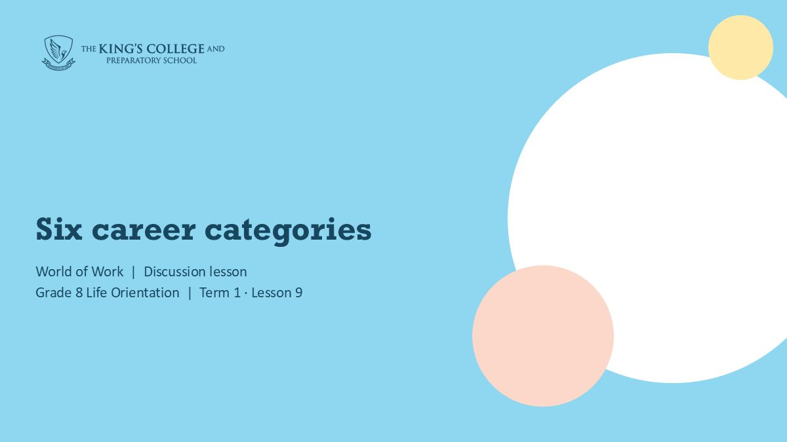

Term 1 · Lesson 9 · Discussion lesson
Six career categories
Start here
Today I will
- Name the six career categories
- Match my interests to a category
- Link categories to school subjects
Would you rather fix a broken bike, solve a mystery, design a poster, help a friend, run a tuck-shop or organise a filing system?
Words to know
- Career
- The work path you follow over many years, which usually needs training.
- Career category
- A group of careers that suit people with similar interests.
- Interest
- Something you enjoy doing or learning about.
- Ability
- Something you are able to do well.
- Skill
- An ability you have learnt and practised.
- Gift
- A strength or talent you have been given, to use well and to help others.
Slides

Videos
Notes
In Grade 9 you will choose subjects that lead towards possible careers. Understanding your interests and strengths now helps you make wise choices later.
Key ideas
- A career is the work path you follow over many years; it usually needs training.
- Interests are things you enjoy doing. Abilities are things you can do well. Skills are abilities you have learnt and practised.
- People are happiest and most successful in work that matches their interests and abilities.
The six career categories
The psychologist John Holland grouped careers into six categories (often called RIASEC). Most people fit two or three categories.
| Category | People who… | Example careers | Useful subjects |
|---|---|---|---|
| Realistic (doers) | Like hands-on, practical and outdoor work with tools, machines or animals | Electrician, farmer, pilot, mechanic | Technology, Natural Sciences, Mathematics |
| Investigative (thinkers) | Like researching, solving problems and science | Doctor, engineer, scientist, pharmacist | Mathematics, Natural Sciences |
| Artistic (creators) | Like creating and expressing ideas | Designer, musician, architect, writer | Creative Arts, languages |
| Social (helpers) | Like teaching, caring for and serving people | Teacher, nurse, social worker, pastor | Languages, LO, Social Sciences |
| Enterprising (persuaders) | Like leading, selling and starting things | Entrepreneur, lawyer, manager | EMS, languages |
| Conventional (organisers) | Like order, detail and working with numbers or data | Accountant, bank clerk, administrator | EMS, Mathematics |
Using your gifts to serve
1 Peter 4:10 reminds us that our gifts are given to serve others. A good career question is not only 'What will pay well?' but also 'Where can my interests and abilities make a difference for others?'
Why think about careers in Grade 8?
You don't have to choose a career now. But the subjects you choose in Grade 9 (for Grades 10–12) can open or close doors. For example, many science, engineering and health careers need Mathematics (not Mathematical Literacy) and Physical Sciences. Exploring your interests now means you can make an informed choice next year.
Interests, abilities and values
- Interests: what you enjoy doing (e.g. designing, helping, building, organising).
- Abilities: what you can do well, now or with practice.
- Values: what matters to you (e.g. helping others, creativity, security, adventure).
- The best career choices match all three, and ask how your gifts can serve others.
Case study: Three friends, three futures
Mia loves helping people, listening to friends and caring for her younger cousins (Social). Aarav enjoys building things, fixing his bike and working outdoors (Realistic), and he is very good at Maths (Investigative). Thabo is a natural leader who organises the team and loves persuading people (Enterprising). Each of them did the interest quiz and found two or three categories that fit. Mia is now thinking about nursing or teaching, Aarav about engineering, and Thabo about starting his own business or sports management.
Questions to think about: Which categories fit each friend? Which school subjects should each of them work hard at? Which categories fit you?
Where to find career information
- Your LO teacher and the school counsellor.
- Career websites and university or college open days.
- People who already work in the career: ask them questions.
- Job shadowing during holidays.
Worked exam answer
Question: Explain why it is important to match your interests to a career. (1 x 2) (2)
Answer: When your work matches your interests you are more likely to enjoy it ✓, so you stay motivated and are more likely to succeed ✓.
Learn the six categories with an example career for each, and be able to match a person's interests (in a scenario) to a category.
Your interests and abilities point to careers where you can thrive.
If your gifts are given to serve others, how could your top career category help other people?
In class: My career profile
- Do the interest quiz: tick what you enjoy.
- Count your ticks in each of the six sections.
- Write down your top two categories.
- List two careers in each that interest you.
- Write one school subject you need to work hard at for them.
Test yourself
- Name the six career categories.
- Which category suits someone who loves helping people?
- Name one career in the Investigative category.
Show answers
1. Realistic, Investigative, Artistic, Social, Enterprising, Conventional. 2. Social. 3. e.g. doctor, engineer, scientist, pharmacist.
Finished early?
Find out three real facts about one career that interests you.
- Choose one career from a category that fits you (for example Social, Realistic or Artistic).
- On a school device, look it up on the Department of Higher Education and Training's career site, careerhelp.org.za.
- In your LO book, write: what the person does, which school subjects help, and one place where you can study for it.
- Write which RIASEC category it belongs to and why.